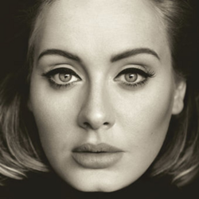
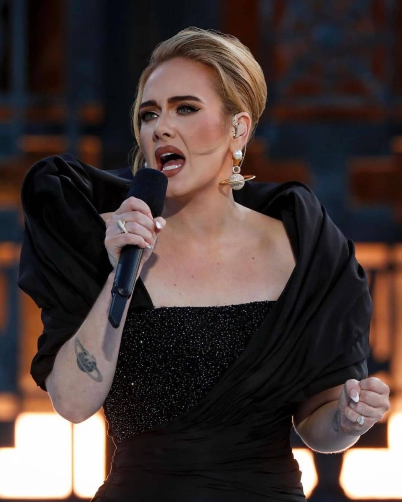
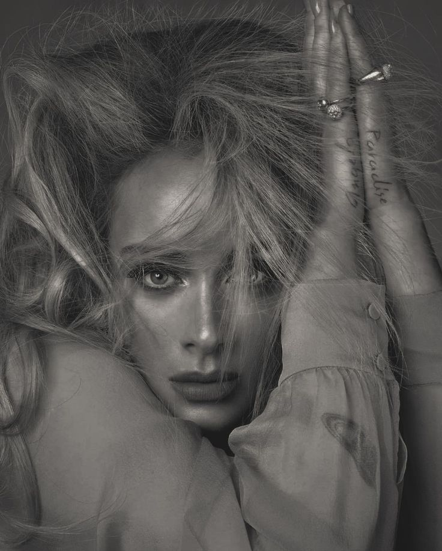

"The scars of your love remind me of us,
they keep me thinking that we almost had it all"
Conhe√ßa ùñ†ùñΩùñæùóÖùñæ, uma artista brit√¢nica que conquistou o p√∫blico
com suas composições marcantes e profundas.
Adele Laurie Blue Adkins, nascida em 5 de maio de 1988 (37 anos)
é uma cantora, compositora e multi-instrumentista.
Acumulando 16 grammys, a artista consolida sua carreira
como uma das artistas contempor√¢neas mais influentes
Discografia
Albúm 19, lançado em 2008
pela gravadora XL Recordings

 Albúm 25, lançado em 2015
Albúm 25, lançado em 2015
pela XL Recordings e Columbia Records
Albúm 30, lançado em 2021
pela Columbia Records
"I have insecurities of course, but I don’t hang out with anyone who points them out to me." — Adele
Adele fotos

